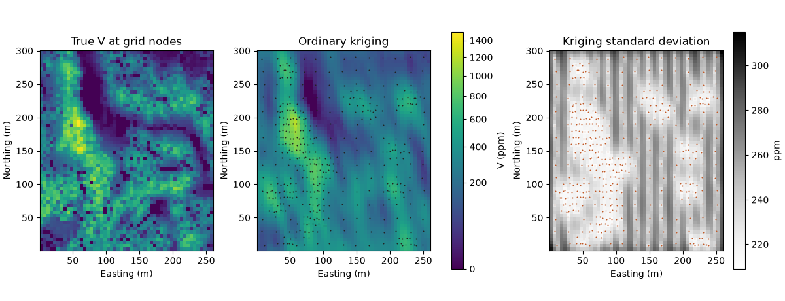
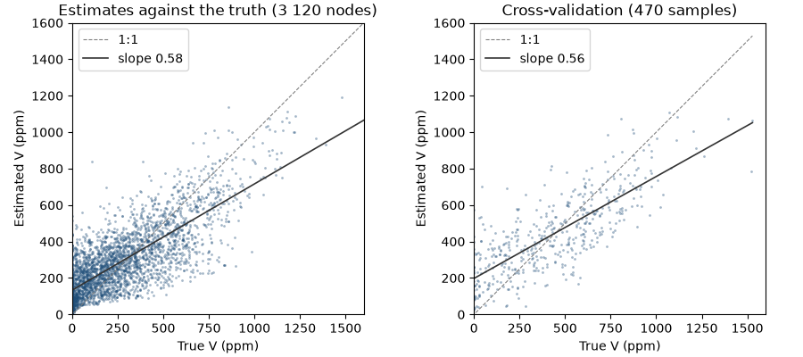

Note
Click here to download the full example code
4. Ordinary kriging¶
Ordinary kriging of V on a 5 m grid with the model from chapter 3, checked against
the exhaustive values and by cross-validation.
import sys
from pathlib import Path
HERE = Path(__file__).parent if "__file__" in globals() else Path.cwd()
sys.path.insert(0, str(HERE.parent))
import ceres as cs
import matplotlib.pyplot as plt
import numpy as np
from common import ACCENT, HIGHLIGHT, INK, map_axes, save
from matplotlib.colors import PowerNorm
samples = cs.datasets.walker_lake()
truth = cs.datasets.walker_lake_exhaustive()["V"].reshape(300, 260)
model = cs.Variogram.from_json((HERE.parent / "03-variography" / "model.json").read_text())
Up to 24 samples within 100 m along the major axis. predict accepts a BlockModel, a PointSet or an array of
coordinates; with_column stores the results on the model.
grid = cs.BlockModel(origin=(0.5, 0.5), size=(5, 5), count=(52, 60))
search = cs.Search(radius=100, max_samples=24, min_samples=4)
ok = cs.OrdinaryKriging(model, search).fit(samples.coords, samples["V"])
estimate, variance = ok.predict(grid, return_variance=True)
grid = grid.with_column("estimate", estimate).with_column("variance", variance)
Compare with the true values at the grid nodes, and re-estimate every sample with itself left out:
nodes = grid.centroids.astype(int)
true_at_nodes = truth[nodes[:, 1] - 1, nodes[:, 0] - 1]
cv = ok.cross_validate()
print(grid)
print(f"grid: mean estimate {estimate.mean():.1f}, true {true_at_nodes.mean():.1f}")
print(f"variance of estimates {estimate.var():.0f} vs true {true_at_nodes.var():.0f}")
print(
f"cross-validation: ME {cv.mean_error:.1f} RMSE {cv.rmse:.1f} r {cv.correlation:.2f} "
f"SSE {cv.standardized_squared_error:.2f}"
)
Out:
BlockModel(regular, 3120 of 3120 cells, count [52, 60, 1], size [5.0, 5.0, 1.0], rotation [0.0, 0.0, 0.0])
estimate: Float64
variance: Float64
grid: mean estimate 294.3, true 276.2
variance of estimates 35595 vs true 62312
cross-validation: ME 5.6 RMSE 189.6 r 0.78 SSE 0.65
The kriging standard deviation depends only on the data layout and the model: low near samples, high in gaps.
shape = (60, 52)
extent = (0.5, 260.5, 0.5, 300.5)
norm = PowerNorm(0.5, vmin=0, vmax=1500)
fig, axes = plt.subplots(1, 3, figsize=(12, 4.6), layout="constrained")
for ax, image, title in (
(axes[0], true_at_nodes, "True V at grid nodes"),
(axes[1], estimate, "Ordinary kriging"),
):
im = ax.imshow(image.reshape(shape), origin="lower", extent=extent, norm=norm)
map_axes(ax, title)
axes[1].scatter(samples.coords[:, 0], samples.coords[:, 1], s=2, color=INK, linewidths=0)
fig.colorbar(im, ax=axes[:2], shrink=0.8, label="V (ppm)")
sd = axes[2].imshow(np.sqrt(variance).reshape(shape), origin="lower", extent=extent, cmap="Greys")
map_axes(axes[2], "Kriging standard deviation")
axes[2].scatter(samples.coords[:, 0], samples.coords[:, 1], s=2, color=HIGHLIGHT, linewidths=0)
fig.colorbar(sd, ax=axes[2], shrink=0.8, label="ppm")
save(fig, "maps")

Kriging is smooth: estimates vary less than the truth, so the regression of estimates on true values has a slope below 1. A mean error² / variance of 0.65 means the model's variance is somewhat pessimistic here.
fig, (a, b) = plt.subplots(1, 2, figsize=(9, 4), layout="constrained")
for ax, x, y, title in (
(a, true_at_nodes, estimate, "Estimates against the truth (3 120 nodes)"),
(b, cv.actual, cv.estimate, "Cross-validation (470 samples)"),
):
cs.plot.scatter(x, y, ax=ax, s=4, color=ACCENT, alpha=0.4)
ax.set(xlim=(0, 1600), ylim=(0, 1600), xlabel="True V (ppm)", ylabel="Estimated V (ppm)")
ax.set_aspect("equal")
ax.set_title(title)
ax.legend(loc="upper left")
save(fig, "validation")

Total running time of the script: ( 0 minutes 0.357 seconds)
Download Python source code: example_04.py